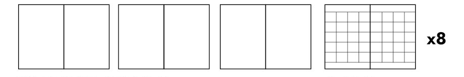
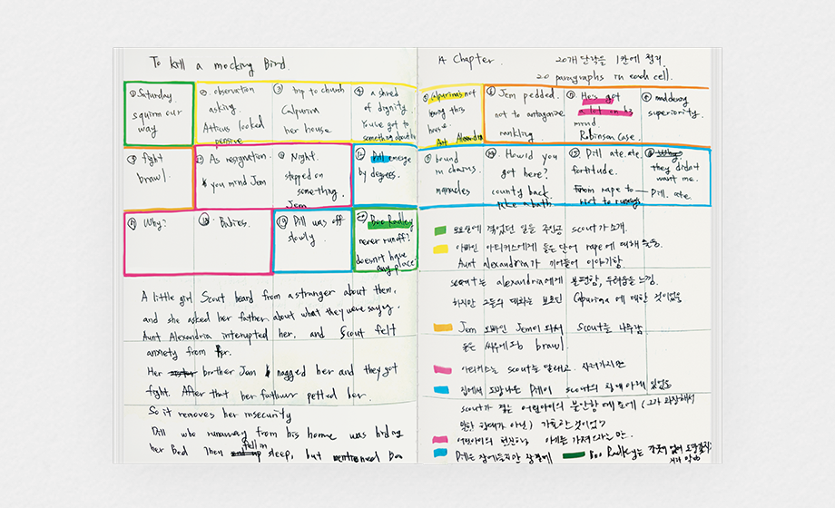

I love taking notes.
When I take notes, I don't miss anything and can make it my own.
However, sometimes just writing becomes a mere act of writing.
It remains on the page but not in my head, and my hand just hurts.
So I wonder whether to start taking notes or not, sometimes I do, sometimes I don't.
I created the Ground & Grid Note to improve this.
The concept is to reorganize the notes you've taken on a blank page into a grid format on the next page.
When I take notes, I don't miss anything and can make it my own. However, sometimes just writing becomes a mere act of writing.
It remains on the page but not in my head, and my hand just hurts.
So I wonder whether to start taking notes or not, sometimes I do, sometimes I don't.
I created the Ground & Grid Note to improve this. The concept is to reorganize the notes you've taken on a blank page into a grid format on the next page.

Not just taking notes but also organizing them, sounds a bit cumbersome?
But it's actually quite good. It creates a sense of effectiveness in studying and note-taking.
Not just taking notes but also organizing them,
sounds a bit cumbersome?
But it's actually quite good.
It creates a sense of effectiveness in studying and note-taking.
Next is the grid page for organizing.
I put the paragraph order and content I previously noted into each of the 40 grid cells.
If there are more than 40 paragraphs, multiple paragraphs would have to go in one cell, but in this chapter, I actually had extra space.
Then I group similar content together with a highlighter.
Next is the grid page for organizing. I put the paragraph order and content I previously noted into each of the 40 grid cells. If there are more than 40 paragraphs, multiple paragraphs would have to go in one cell, but in this chapter, I actually had extra space.
Then I group similar content together with a highlighter.

🟩 First, Scout introduces what happened on Saturday in the opening.
🟨 Then when Scout asks her father about a word she heard, her aunt enters the conversation.Scout feels afraid during the conversation between the two adults.
🟧 Her brother Jem comes and scolds Scout, and they end up fighting.
🟥 Her father Atticus comforts Scout and puts her to bed, but
🟦 Her friend Dill, who ran away from home, was under Scout's bed. Dill said he ran away because he was abused, but in truth, it was because his childish anxiety wasn't comforted by his family.
🟩 The adults in the house find out, and it's settled that Dill will stay for one night.
Scout asks Dill if he thinks Boo Radley, the mysterious figure in town, didn't run away. Dill answers drowsily that Boo Radley probably doesn't even have anywhere to run to.
🟩 First, Scout introduces what happened on Saturday in the opening.
🟨 Then when Scout asks her father about a word she heard, her aunt enters the conversation.
Scout feels afraid during the conversation between the two adults.
🟧 Her brother Jem comes and scolds Scout, and they end up fighting.
🟥 Her father comforts Scout and puts her to bed, but
🟦 Her friend Dill, who ran away from home, was under Scout's bed. Dill said he ran away because he was abused, but in truth, it was because his childish anxiety wasn't comforted by his family.
🟩 The adults in the house find out, and it's settled that Dill will stay for one night.
Scout asks Dill if he thinks Boo Radley, the mysterious figure in town, didn't run away. Dill answers drowsily that Boo Radley probably doesn't even have anywhere to run to.
After doing this, I understood the structure of this chapter much better.
The background is briefly introduced at the beginning, and Scout is shown anxiously listening to the conversation between her father and aunt.
The portrayal of young Scout, feeling insecure because she doesn't fully feel the love of adults, connects with her friend Dill who appears later.
After doing this, I understood the structure of this chapter much better.
The background is briefly introduced at the beginning, and Scout is shown anxiously listening to the conversation between her father and aunt.
The portrayal of young Scout, feeling insecure because she doesn't fully receive the love from adults, connects with her friend Dill who appears later.
After various incidents are settled, the final conversation between the two children returns to the overall story of the book.
After various incidents are settled, the final conversation between the two children returns to the overall story of the book.
With the mention of Boo Radley. He is one of the main characters in this book.
Dill answers that Boo Radley is hiding in that house because he has nowhere to run to.
The child's insight is impressive but also gives a sad feeling
as the chapter concludes.
With the mention of Boo Radley. He is one of the main characters in this book.
Dill answers that Boo Radley is hiding in that house because he has nowhere to run to.
The child's insight is impressive but also gives a sad feeling as the chapter concludes.